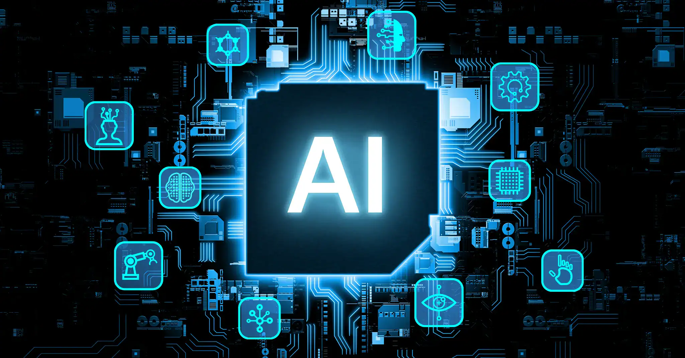

Inteligencia Artificial

¿Que es la IA
La Inteligencia Artificial (IA) es una rama de la informática que desarrolla sistemas capaces de realizar tareas que normalmente requieren inteligencia humana, como aprender, razonar, resolver problemas, reconocer imágenes, comprender el lenguaje y tomar decisiones.
La Inteligencia Artificial (IA) es una tecnología que permite a las computadoras aprender, analizar información y realizar tareas que normalmente requieren inteligencia humana.
¿Como funciona la IA?
La Inteligencia Artificial funciona analizando grandes cantidades de datos para encontrar patrones y aprender de ellos. Luego utiliza ese aprendizaje para responder preguntas, hacer predicciones o tomar decisiones.
Pasos básicos
Tipos de IA
1. IA estrecha
Es la IA que existe actualmente. Está diseñada para realizar tareas específicas, como responder preguntas, reconocer imágenes, traducir idiomas o recomendar contenido. Algunos ejemplos son ChatGPT, Siri y Google Translate.
2. IA General (AGI):
Sería una inteligencia capaz de realizar diferentes tareas intelectuales de manera similar a una persona, pudiendo aprender y adaptarse a situaciones nuevas. Actualmente, no existe una AGI plenamente desarrollada.
3. Superinteligencia Artificial (ASI):
Es un concepto teórico de una IA que tendría capacidades intelectuales superiores a las humanas en prácticamente todos los campos. Por ahora, no existe y pertenece principalmente al ámbito de la investigación y la especulación.
Ejemplos de IA
Conclusion
La Inteligencia Artificial es una tecnología que está cambiando la forma en que vivimos, estudiamos y trabajamos. Actualmente se utiliza en muchas áreas y cada vez tiene más aplicaciones. Aunque ofrece grandes ventajas, también presenta desafíos relacionados con la privacidad, el empleo y el uso responsable. Por eso, es importante aprender sobre ella y utilizarla de manera responsable y segura.